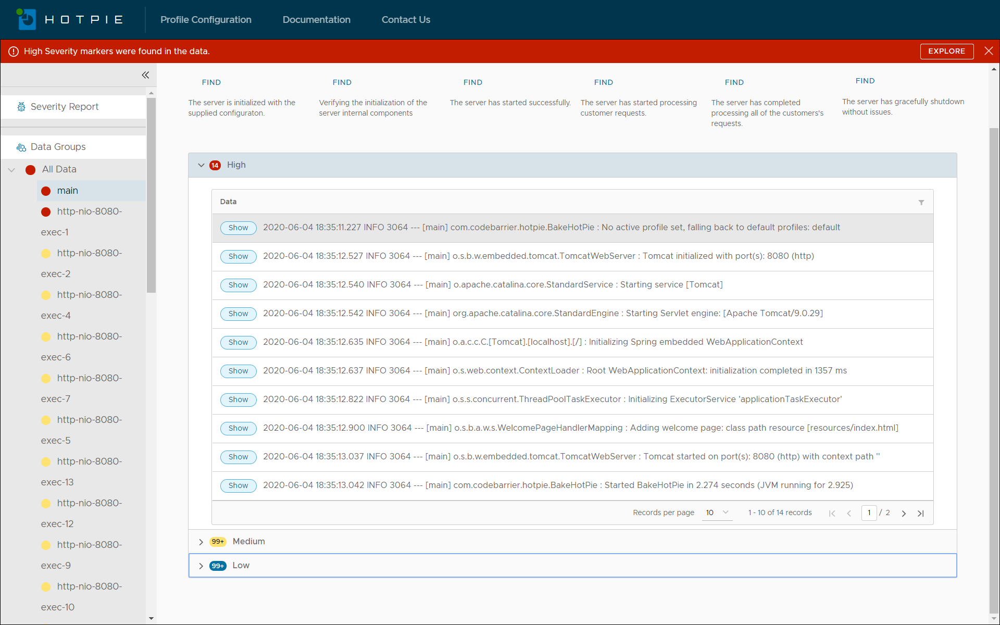

<div class="content-area">
<section style="padding: 24px;background-blend-mode: lighten;">
    <h1 style="text-align: center;font-family: 'orbitron';letter-spacing: .15em;">A solution for interpretting and organizing the contents of your data files for
        easier analysis and trouble
        shooting.</h1>
    <h5>We are often in situations where we have a file to analyze and the content is so raw, that we struggle to
        make any sense of the data in order to put that information to good use.</h5>
    <h5>One such example is a log file. Haven't we all been in situaltions where we have discovered an issue and
        all we have, to figure it out, is the "LOG". It often takes time, energy and patience to figure out the
        essence of it all.</h5>
    <h5>What if we could make this a one time task. What if we could create a one time processing profile for the
        log file that would take the data and present it to us in a way that would make it easier to understand it?
    </h5>
    <h3>That is what we are here to offer. You create the profile once, and we give you organized data everytime.
    </h3>
    <h2 style="text-align: center;">We transform your data that looks like this...</h2>
    <div style="margin: auto;">
        
    </div>
    <h2 style="text-align: center;">Into this!!</h2>
    <div style="margin: auto;">
        
    </div>
    <h2 style="text-align: center;">and this!!</h2>
    <div style="margin: auto;">
        
    </div>
</section>
</div>